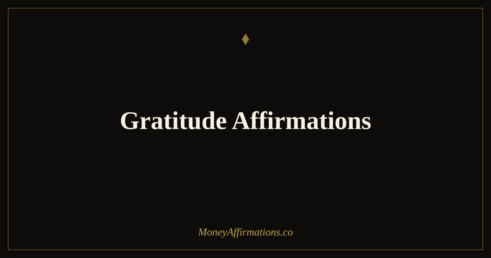

Gratitude Affirmations: 30 Statements to Attract More Prosperity

Gratitude sounds simple. It is also one of the most consistently underestimated tools in financial psychology. The difficulty is that gratitude and financial anxiety run on opposite tracks. When money is tight or goals feel distant, the mind naturally narrows onto what is missing, what is owed, and what might go wrong. That narrowing is not a character flaw — it is the brain doing exactly what it was designed to do under perceived scarcity. The problem is that it makes it harder to notice what is already working.
Gratitude affirmations interrupt that narrowing pattern. These 30 statements are designed to train your attention toward abundance that is already present — not to deny difficulty, but to hold it alongside recognition of what is real and good. Over time, that shift changes how you relate to money: less fear, less avoidance, more openness to the opportunities and resources that were always there but harder to see from a place of lack.
What are gratitude affirmations?
Gratitude affirmations are present-tense statements that actively acknowledge and affirm the abundance already in your life, while simultaneously opening you to more. They differ from ordinary gratitude practice in that they are identity-based — they are not just observations of what you are thankful for, but declarations of who you are as a grateful, prosperous person. This distinction matters because identity drives behaviour more powerfully than intention alone.
For money and prosperity specifically, gratitude affirmations work on two levels simultaneously. At the cognitive level, they redirect attention from scarcity to sufficiency. At the emotional level, they create the feelings of safety and openness that allow new financial opportunities to register as possibilities rather than threats. A person who feels fundamentally abundant is simply better positioned to act on what arrives. These affirmations create that orientation — one statement at a time, practised until it becomes a default way of seeing.
30 gratitude affirmations
- I am deeply grateful for the money that flows through my life each day.
- I appreciate every resource I have, knowing appreciation invites more.
- My heart is open and grateful for the financial progress I have already made.
- I give thanks for the abundance that surrounds me, seen and unseen.
- I am grateful for my ability to earn, to save, and to grow my wealth steadily.
- Every bill I pay is evidence that I have the resources to meet my needs.
- I appreciate the financial opportunities that find me every single day.
- I am thankful for the mindset shifts that are transforming my financial life.
- Gratitude opens me to receiving more than I could reach from a place of fear.
- I celebrate every small financial win as evidence of my growing abundance.
- I am grateful for the work I do and the income it creates in my life.
- My gratitude for what I have creates the space for more to arrive.
- I appreciate every person who has ever supported, paid, or invested in me.
- I am thankful that I know how to handle money with growing skill and care.
- Abundance is already here, and my gratitude makes it more visible every day.
- I recognise and appreciate the financial safety I have built, however small.
- I am grateful for this moment, knowing it contains the seeds of my next level.
- My grateful heart is a magnet for prosperity in all its forms.
- I give thanks for the clarity that helps me make wise financial decisions.
- I appreciate the lessons that money has taught me and the wisdom I carry forward.
- I am grateful that financial abundance is not only possible but actively moving toward me.
- Every day I find new reasons to be grateful for the money I have and the money incoming.
- I appreciate my own courage in choosing a better relationship with money.
- Thankfulness is my natural state and it draws more good into my financial life.
- I am grateful for a body that works, a mind that learns, and a life that grows.
- My gratitude for small things creates the emotional climate for large things to arrive.
- I give thanks for the financial systems and tools that make my life more manageable.
- I am thankful for every morning that brings a new opportunity to choose abundance.
- Gratitude connects me to the prosperity that already exists all around me.
- I live in a state of grateful expectancy, knowing good things are always on their way.
How to use these affirmations
Gratitude affirmations work best when they are specific rather than abstract. After reading a statement like "I am deeply grateful for the money that flows through my life each day," pause and name one actual, specific flow: a client payment, a salary deposit, a refund, a gift. The specificity is what converts an affirmation from a phrase into a belief — your brain registers it as evidence rather than aspiration. Spend thirty seconds on each statement you choose, making the connection between the words and something real in your life.
Use them at two natural points in the day: in the morning, to set a tone of appreciation before financial decisions are made, and in the evening, to close the loop on the day by naming three things that confirmed abundance. The evening practice is particularly powerful because it trains the brain to search actively for evidence of prosperity throughout the day, knowing it will need to report back. This is the mechanism behind what some practitioners call "abundance scanning" — the deliberate cultivation of a perceptual filter that finds more of what it is looking for. Pair this with the daily affirmations for money routine for a complete morning-to-evening practice.
Why gratitude and money are neurologically linked
Gratitude activates the brain's reward circuitry — specifically the release of dopamine and serotonin, the neurotransmitters associated with satisfaction, motivation, and wellbeing. What is particularly relevant for financial behaviour is that dopamine is not only the "reward" chemical — it is the anticipation chemical. It is released when the brain expects something good to happen, which is why a genuine sense of grateful expectancy ("I am thankful and more is coming") produces motivational effects that passive gratitude does not.
Research by psychologist Robert Emmons, one of the leading researchers on gratitude, found that people who practised regular gratitude were more likely to exercise financial self-control, more likely to delay gratification, and more likely to report higher life satisfaction — which is itself predictive of better long-term financial decision-making. The mechanism is partly attentional (grateful people notice more opportunities) and partly emotional (grateful people feel safer, which reduces the fear-driven financial decisions that tend to be the most costly). When you practise gratitude affirmations consistently, you are not just feeling nicer about your money situation. You are restructuring the emotional and perceptual architecture through which all financial decisions are made.
Tips to make them work faster
- Anchor each statement to a specific example. After every affirmation, name one real instance from your own life. Specificity is what makes abstract statements feel true.
- Use them immediately after receiving money. When a payment arrives — of any size — pause and say one gratitude affirmation before moving on. This trains the brain to associate income with expansion rather than relief-followed-by-anxiety.
- Combine with an evening review. Each night, note three financial or abundance-related things you genuinely appreciated today. This is active gratitude training, not passive recall.
- Write one gratitude statement per week in your own words. Original language carries more emotional weight than repeated phrases. A sentence you wrote yourself can become your most powerful affirmation.
- Use them when financial anxiety spikes. Rather than trying to suppress the anxiety, pair it with one gratitude affirmation about something genuinely real. The contrast creates emotional regulation without denial.
Frequently Asked Questions
Can gratitude affirmations help with financial anxiety?
Yes — they are one of the more effective tools for reducing financial anxiety specifically, because they redirect attention from what is missing to what is present. Financial anxiety tends to be future-focused and scarcity-driven. Gratitude affirmations interrupt that pattern by anchoring attention in current reality, which is almost always more abundant than anxious thinking acknowledges. Regular practice does not eliminate financial problems, but it reduces the cognitive distortion that makes them feel larger and more permanent than they are.
Is there a difference between gratitude affirmations and a gratitude journal?
They work through related but distinct mechanisms. A gratitude journal captures specific, evidence-based observations about what you are thankful for. Gratitude affirmations rehearse the identity and orientation of a grateful person — they are about who you are becoming, not just what you notice. Both are valuable; combining them (affirmations first, then journal one specific observation) creates a practice that works at both the identity level and the evidence level simultaneously.
What if I find it hard to feel grateful about money when I am struggling financially?
Start with the smallest observable truth. You do not need to feel grateful for your bank balance — you can begin with gratitude for having a bank account, for a transaction that worked today, for the knowledge you have about managing money, or simply for the capacity to want things to improve. Gratitude affirmations do not require you to pretend your situation is better than it is. They require only that you acknowledge what is genuinely present alongside what is difficult.
For a broader set of statements to support your financial life from every angle, explore the full prosperity affirmations collection and build a daily practice that combines gratitude with purposeful financial intention.